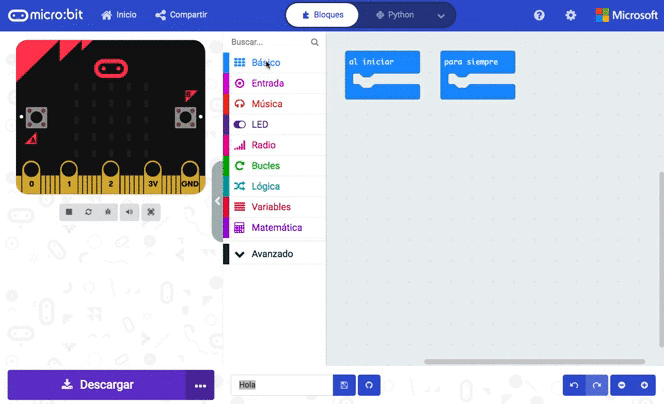
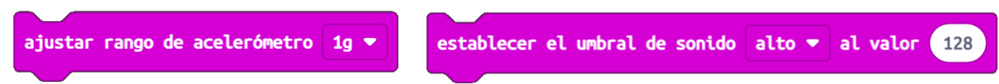
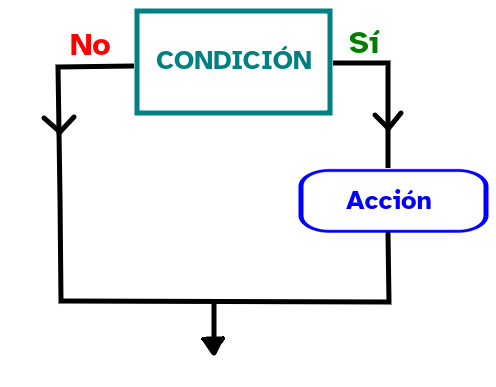
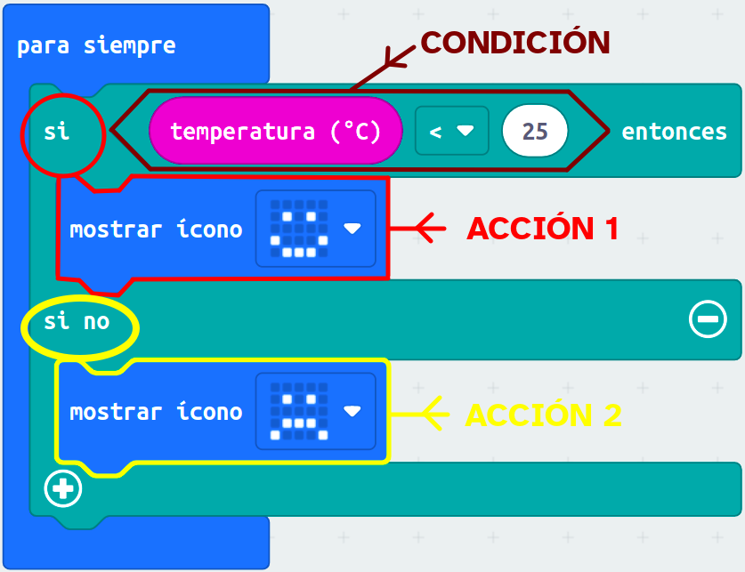
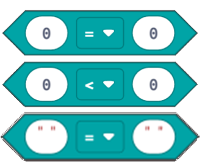
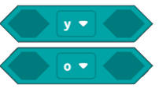

Diccionario
Bugueado

Escriba su contenido...
Escriba su contenido...

Ya conoces los tipos de señales y qué son los sensores.
Ha llegado el momento de conocer las posibilidades de programación de los sensores de la placa micro:bit con MakeCode.
Para ello, vamos a colocarnos en parejas para profundizar en este entorno de programación que nos permitirá programar nuestra placa robótica.
Debéis estar muy atentas y atentos
¿Vamos?
En parejas, vamos a recordar las categorías de bloques de programación del entorno MakeCode relacionadas con los sensores.
En esta actividad, comentad en parejas cuáles son las zonas en las que se divide el entorno de programación MakeCode y detalla la ubicación y utilidad de las categorías Entradas, LED, Pines, Serial, Avanzado y Extensiones.
Al terminar comprobadlo, pulsando en la siguiente imagen interactiva para comprobar si lo habéis hecho bien.
Vamos a ver cómo programar los sensores de la placa micro:bit.

Pasos a realizar:
En el siguiente vídeo vamos ver cómo programar los sensores y en especial el acelerómetro, sensor de luz y la brújula de la placa.
Al final del vídeo tienes una propuesta de ejercicio que puedes realizar para poner en práctica lo visto: Hacer sonar un tono cuando la micro:bit esté orientada al norte.
En el siguiente vídeo veremos cómo programar el sensor de temperatura y el sensor magnético de la placa micro:bit.
Al final del vídeo tienes una propuesta de ejercicio que puedes realizar para poner en práctica lo visto: Hacer sonar un tono cuando la temperatura baje de 3ºC.
En el siguiente vídeo veremos cómo programar el acelerómetro de la placa como un evento para iniciar un programa, como condición de un condicional o como como condición de un bucle.
Al final del vídeo tienes una propuesta de ejercicio que puedes realizar para poner en práctica lo visto: Si la matriz led se pone hacia abajo sonará un aviso, si no muestra una cara feliz.
En el siguiente vídeo veremos cómo programar los pulsadores de la placa como condición de un programa. Al final del vídeo tienes una propuesta de ejercicio que puedes realizar para poner en práctica lo visto: Mostrar la letra del pulsador accionado programándolo como condición.
A continuación, en el siguiente vídeo veremos cómo programar los pulsadores de la placa como un evento en un programa. Al final del vídeo tienes una propuesta de ejercicio que puedes realizar para poner en práctica lo visto: Mostrar una flecha que apunte hacia el pulsador accionado.
Si lo necesitas, puedes descargar los subtítulos del video en formato texto haciendo clic aquí.
Si lo prefieres también los puedes descargar en formato de subtítulo .vtt haciendo clic aquí.
Nota: Se abrirán en ventana nueva. Colócate sobre el texto, haz clic en el botón derecho de tu ratón y podrás descargarlos en el formato original.
Una actividad de clase puede hacernos sentir de muchas maneras: confundido, aliviada, inseguro, tensa, alegre, orgullosa, enfadado…
La forma en la que respondes ante una actividad puede decirte muchas cosas sobre ti:
Conocer las emociones que sientes cuando vas a hacer una actividad te ayudará a:
¡Haz caso a tus emociones!
El siguiente vídeo te muestra cómo compartir un proyecto en el entorno de programación MakeCode.
Vamos a ver los bloques de programación de los sensores de la categoría Entrada.
Estos bloques se usarán junto con bloques condicionales que se encuentran en la categoría Lógica y juntos nos permitirán definir en nuestro programa ¿Bajo qué condiciones se realizará algo?:
Otros bloques que van ligados a los condicionales son los comparadores lógicos, de la categoría Lógica también.
Después de trabajar con el entorno de programación de Scratch, te resultará fácil conocer y comprender su funcionamiento en MakeCode.
En las siguientes pestañas puedes ver cómo utilizarlos:
Los sensores en Makecode están en la categoría Entrada y en otras.
Son de color morado y forma redondeada. Al igual que los órganos de los sentidos, permiten a nuestra placa robótica percibir la intensidad de diferentes estímulos sonoros, lumínicos, etc. Los que tienes a continuación son los más utilizados:
| Bloque de programación | Descripción |
 x en MakeCode") |
Aceleración: Mide la velocidad con la que se mueve la placa micro:bit en las coordenadas x, y ó z. |
| Nivel de luz: Permite captar el nivel de luminosidad que rodea a la placa. | |
| Dirección de la brújula: Hace que podamos orientarnos, ya que este sensor es capaz de detectar la dirección norte. | |
 |
Temperatura: Nos indica la temperatura del ambiente en grados Centígrados (ºC), aunque no es tan fiable como un termómetro digital. |
| Nivel de sonido: Detecta el nivel de sonido que hay alrededor de la placa. |
Aunque nuestra placa robótica tiene varios sensores, no es capaz de saber por sí sola qué nivel de aceleración o de sonido es el adecuado, por lo que tenemos que indicárselo con los siguientes bloques:

A la hora de programar, la estructura de programación de los condicionales se usa mucho. Este esquema resume cómo funciona un condicional simple:

"Si" se cumple la condición se ejecuta una acción.
 Los condicionales son estructuras de la categoría Lógica y sirven para programar instrucciones con la estructura anterior.
Los condicionales son estructuras de la categoría Lógica y sirven para programar instrucciones con la estructura anterior.
En el ejemplo de la izquierda vemos cómo son y cómo se utilizan:
El siguiente esquema resume cómo funciona un condicional compuesto:

"Si" se cumple la condición se ejecuta la acción 1 y si no se cumple se ejecuta otra diferente (acción 2).
En el ejemplo de la izquierda vemos cómo son y cómo se utilizan:
En las siguientes pestañas veremos los comparadores lógicos, como el bloque hexagonal donde hemos puesto la condición.
Los comparadores lógicos son bloques de la categoría Lógica, al igual que los condicionales. Nos sirven para comparar los bloques sensores con una cantidad numérica.
Los que más vamos a utilizar junto con los condicionales son los que ves a la izquierda.
Contienen dos cajas ovaladas: la primera recoge información proporcionada por los sensores (medición de temperatura, sonido...) y la segunda establece una comparación con una magnitud:
¿Qué comparador podemos utilizar cuando hay dos condiciones?
En este caso utilizamos los siguientes comparadores, llamados comparadores booleanos.
Los comparadores booleanos son aquellos en los que nos dicen si se cumple una condición compuesta, es decir, podemos poner dos condiciones en una.
Para que se cumpla el resultado de la condición dependerá de dos situaciones previas, simultáneamente (y) o alguna de las dos (o).
El siguiente vídeo te ayudará a comprender mejor la programación con condicionales:
Si aún no sabes muy bien cómo encajar los bloques cuando usamos condicionales, te aconsejo que prestes atención a la siguiente imagen, te lo muestra paso a paso.

En este ejercicio están algunos sensores incorporados en la placa micro:bit en columnas y abajo bloques de programación de MakeCode. Tienes que arrastrar los bloques de programación de MakeCode sobre su correspondiente sensor.
En este enlace puedes ver más información sobre las funciones de los bloques de programación.
Clasifica arrastrando los bloques según sirvan para controlar dispositivos de entrada o salida de la placa.
Ahora que conoces todos los tipos de bloques más importantes en MakeCode estás preparada o preparado para responder a las cuatro preguntas clave que debemos hacernos cada vez que realizamos una programación.
Arrastra cada bloque en la zona de la pregunta a la que responda:
¿Recuerdas como se llaman los bloques de MakeCode que hemos estudiado y a que categoría pertenecen?
Observa las letras, identifica y rellena las palabras que faltan.
El siguiente programa se ha bugueado y no funciona correctamente, ¿puedes arreglarlo para que si hay buena temperatura (menos de 25) y suficiente luz (más de 100), se muestre una cara sonriente en la matriz?

Definición:
Expresión coloquial para indicar que un programa o una parte de él tiene bugs (errores) que impiden su correcto funcionamiento.
Ejemplo:
El videojuego se ha bugueado y ha dejado de funcionar.
Obra publicada con Licencia Creative Commons Reconocimiento No comercial Compartir igual 4.0
{kind=link}
{kind=link}
{kind=link}
{kind=link}